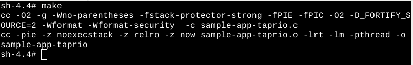

Build the software for this demo as follows:
Enter the following commands at each board to build the sample-app-taprio application. Sample-app-taprio will be built.
$ cd opt/intel/iotg_tsn_ref_sw $ cd sample-app-taprio $ make

Next: IEEE 802.1Qbv Step 3: Pick the Scenario to Run